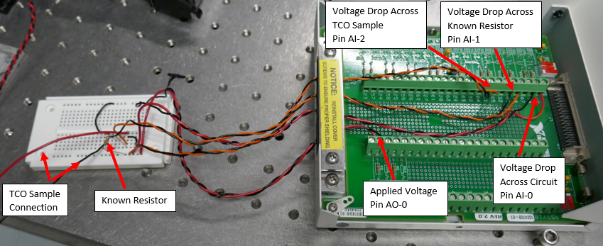
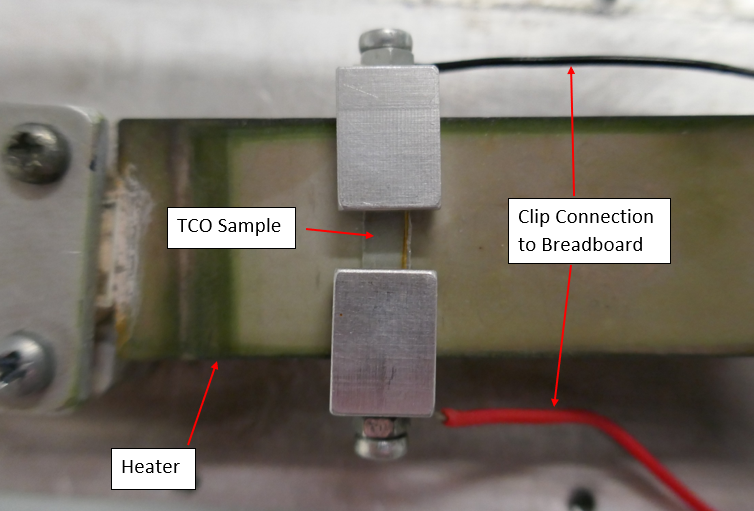

Final Year Thesis
Accelerated Ageing of Novel Transparent Conducting Oxides
My final year thesis centred around the determination of how different transparent conducting oxides age under extreme conditions. This was achieved by measuring the change in resistance of multiple samples and comparing the difference in their activation levels. Before this experiment could be carried out, the instrument used to measure the change in resistance had to be constructed. It was comprised of a PCIe card, pinout board and breadboard and was programmed using LabView. In order to make a significant electronic connection with the samples, custom clips were fabricated. This instrument was subjected to rigorous testing to ensure it was an Ohmic device and to make improvements that reduced noise levels. The instrument and LabView program were integrated into a larger system. This improved functionality of both the instrument and larger system.
The samples were then clamped onto a heater using the clips and placed in a controlled environment. This was done to alter the temperature of the sample and the surrounding humidity level. Samples were subject to different temperatures and humidity levels that exceeded normal conditions. This was done to accelerate the ageing of the samples to determine how their electrical properties will depreciate over a number of years in normal conditions.
I kept a journal throughout this project where I detailed problems faced and the solutions I used. This journal aided me while I was writing my final report. This report detailed the construction and testing of the instrument, data obtained from the experiment, my finding and conclusions. I also detailed improvements that could be made to the instrument to improve data recorded. I concluded this project by presenting my findings to a group of physics lecturers. During this presentation they asked questions about the instrument, data and conclusions.